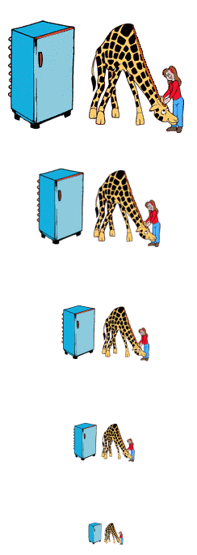

Kleiner IQ-Test
Der folgende kleine Test besteht nur aus 4 Fragen.
Die Antwort finden Sie jeweils weiter unten!
1. Wie bringen Sie eine Giraffe in einen Kühlschrank?

Korrekte Antwort:
Öffnen Sie die Kühlschranktür, stellen Sie die Giraffe hinein und schliessen Sie die
Tür.
Diese Frage prüfte, ob Sie einfache Dinge zu kompliziert anpacken.
2. Wie bringen Sie einen Elefanten in den Kühlschrank?
Falsche Antwort:
Öffnen der Kühlschranktür, hineinstellen des Elefanten und schliessen der Tür.
Korrekte Antwort:
Öffnen der Kühlschranktür, herausnehmen der Giraffe, hineinstellen des Elefanten und
schliessen der Tür.
Diese Frage prüfte, ob Sie die Rückwirkung Ihrer Handlungen verstehen.
3. Der Löwe beruft eine Tier-Konferenz ein. Alle nehmen teil ausser einem...
Welches
Tier nahm nicht an der Konferenz teil?

Korrekte Antwort: Der Elefant.
(Der Elefant ist im Kühlschrank).
Diese Frage prüfte Ihr Gedächtnis.
Nun, auch wenn Sie die drei ersten Fragen nicht richtig beantwortet
haben, so können Sie doch bei der letzten Ihre Fähigkeiten zeigen.
4. Sie müssen einen Fluss überqueren, der von Krokodilen besiedelt ist.
Wie machen Sie das?
Korrekte Antwort:
Sie schwimmen einfach hinüber. Alle Krokodile nehmen ja an
der Tier-Konferenz teil.
Zusatz: Falls Sie nicht schwimmen können, so öffnen Sie die Kühlschranktür, nehmen Sie den Elefanten
heraus und reiten Sie auf ihm durch den Fluss (Elefanten sind von Natur aus Schwimmer).
Diese Frage prüfte, ob Sie schnell von Ihren Fehlern lernen können.
Nach Anderson Consulting Worldwide beantworteten rund 90% der Berufstätigen alle Fragen falsch.
Hingegen beantworteten viele Vorschulpflichtige einige Fragen richtig...
Nach Anderson Consulting beweist dies, dass die meisten Berufstätigen das Denken eines
Vierjährigen besitzen!